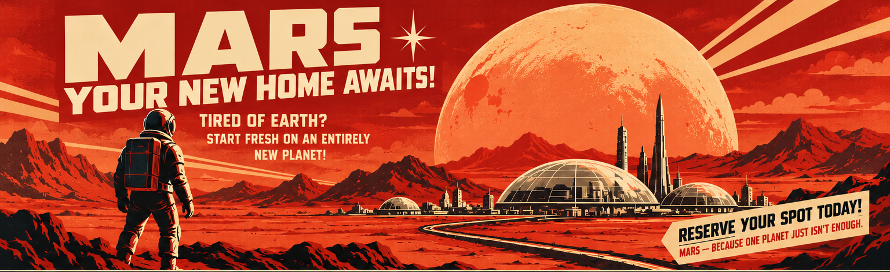

★
A Second Home for Humanity
Help create a backup civilization and ensure humanity's survival beyond Earth.

Help create a backup civilization and ensure humanity's survival beyond Earth.
Drive breakthroughs in agriculture, energy, medicine, robotics, and space travel.
Study an entirely new planet and help humanity expand farther into the solar system.
Terraforming could one day make parts of Mars warmer and more suitable for human life.
Not yet. Humanity should not begin terraforming Mars until we agree on how the planet will be governed.
Before permanently changing another planet, we need clear international rules that answer major questions:
Terraforming Mars could benefit humanity, but once major environmental changes begin, they may be impossible to reverse. We should establish the rules before we reshape the planet.